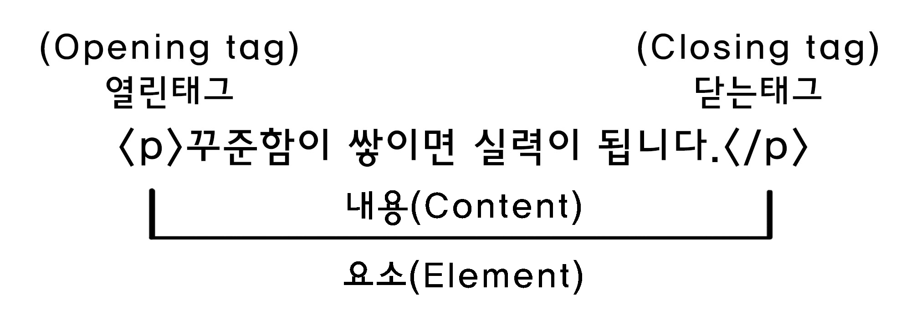
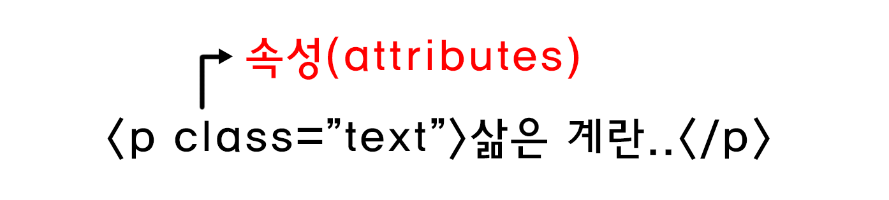

HTML
HTML(Hyper Text Markup Language)은 웹 문서를 표현하기 위한 하이퍼텍스트 마크업 언어
태그(tag)
태그는 HTML에서 정보를 전달하는 방식을 의미
- 열린 태그(Opening tag) : 요소의 이름과 열고 닫는 꺽쇠 괄호로 구성되어 있으며, 요소의 시작부터 효과가 적용되기 시작한다.
- 닫는 태그(Closing tag) : 요소의 이름 앞에 슬래시(/)가 있는것을 제외하면 열린태그와 같다. 이것은 요소의 끝에 위치하며 닫는 태그를 적지 않는것은 흔한 초심자의 오류이며, 이상한 결과를 낳게된다.
- 내용(Content) : 요소의 내용이며, 단순한 텍스트이다.
- 요소(Element) : 열린태그, 닫는태그, 내용을 통틀어 요소라고 칭한다.
속성(Attributes)
HTML 속성은 태그에 기본 기능 및 유형을 설정하고, 태그의 동작으로 제어하기 위한 용어
- 요소 이름 다음에 바로 오는 속성은 요소 이름과 속성 사이에 공백이 있어야 되고, 하나 이상의 속성들이 있는 경우엔 속성 사이에 공백이 있어야 한다.
- 속성 이름 다음엔 등호(=)가 붙는다.
- 속성 값은 열고 닫는 따옴표로 감싸야 한다.
요소(Element)
HTML을 구성하는 가장 기본 단위
- 시작 태그와 끝나는 태그 사이의 범위를 요소라고 한다.
주석
주석 표시는 프로그램에 영향을 미치지 않으며, 설명이나 메모를 목적으로 주로 사용
<!-- 주석표시 -->;
블록요소/인라인요소
블록요소는 박스, 인라인 요소는 텍스트를 의미한다.
- 블록 엘리먼트(Block Element)
- 독립된 박스 영역으로 한 줄에 하나의 블록 요소만 표현 가능하다.
- 블록 요소에는 블록 요소와 인라인 요소를 포함할 수 있다.
- <div>, <p>, <ul>, <li>, <hr>, <address>
- 인라인 엘리먼트(Inline Element)
- 독립된 텍스트 영역으로 한 줄에 여러개의 인라인 요소를 표현 가능하다.
- 인라인 요소에는 블록 요소가 포함될 수 없지만, 인라인 요소는 포함할 수 있다.
- <span>, <a>, <img>, <input>, <button>, <br>
DTD 선언
웹 문서를 제작하기 위해서는 웹 문서 유형을 설정해야 한다.
- DTD(Document Type Declaration)을 설정하지 않거나 잘못 설정하면 브라우저에 따라 화면이 다르게 나오거나 렌더링이 달라지기 때문에 독타입을 설정해야 한다.
<!-- HTML 4.01 Strict -->
<!DOCTYPE HTML PUBLIC "-//W3C//DTD HTML 4.01//EN" "http://www.w3.org/TR/html4/strict.dtd">
<!-- HTML 4.01 Transitional -->
<!DOCTYPE HTML PUBLIC "-//W3C//DTD HTML 4.01 Transitional//EN" "http://www.w3.org/TR/html4/loose.dtd">
<!-- HTML 4.01 Frameset -->
<!DOCTYPE HTML PUBLIC "-//W3C//DTD HTML 4.01 Frameset//EN" "http://www.w3.org/TR/html4/frameset.dtd">
<!-- XHTML 1.0 Strict -->
<!DOCTYPE html PUBLIC "-//W3C//DTD XHTML 1.0 Strict//EN" "http://www.w3.org/TR/xhtml1/DTD/xhtml1-strict.dtd">
<!-- XHTML 1.0 Transitional -->
<!DOCTYPE html PUBLIC "-//W3C//DTD XHTML 1.0 Transitional//EN" "http://www.w3.org/TR/xhtml1/DTD/xhtml1-transitional.dtd">
<!-- XHTML 1.0 Frameset -->
<!DOCTYPE html PUBLIC "-//W3C//DTD XHTML 1.0 Frameset//EN" "http://www.w3.org/TR/xhtml1/DTD/xhtml1-frameset.dtd">
<!-- XHTML 1.1 -->
<!DOCTYPE html PUBLIC "-//W3C//DTD XHTML 1.1//EN" "http://www.w3.org/TR/xhtml11/DTD/xhtml11.dtd">
<!-- html5 -->
<!DOCTYPE html>
언어 속성 설정
콘텐츠의 언어를 인식하고 언어 정보를 추출하는데 사용한다.
- 미리 언어를 설정하면 효율성이 더 좋아진다.
<!--HTML5 -->
<html lang="ko">
<!--HTML4 -->
<html xmlns="http://www.w3.org/1999/xhtml" xml:lang="en">
문서구조
HTML 구조는 html 요소 안에 head와body로 이루어져 있다.
- HTML 구조는 독타입 선언을 해주어야 하나의 웹 문서가 완성된다.
- HTML 문서는 상하 관계가 존재하는 계층적인 구조로 되어있다. 상위에 있는 요소와 하위에 있는 요소는 부모 자식 관계로 표현하며, 이러한 구조를 DOM 구조라고 한다.
- HEAD 요소에는 제목, 사이트 정보, 스크립트, 스타일시트, 메타 정보 등을 제공한다.
- BODY 요소에는 문서 본문에 해당하는 콘텐츠 영역이다.
<!DOCTYPE html>
<html lang="ko">
<head>
</head>
<body>
</body>
</html>
웹 표준과 웹 접근성
- 웹 표준(Web Standards) -
정의
- 웹 표준이란 브라우저 종류 및 버전에 따른 기능 차이에 대하여 호환이 가능하도록 제시된 표준이다. 다른 기종 혹은 플랫폼에 따라 달리 구현되는 기술을 동일하게 구현함과 동시에 어느 한쪽에 최적화되어 치우치지 않도록 공통요소를 사용하여 웹 페이지를 제작하는 기법을 의미한다.
준수 이유
- 국내 웹의 현실은 특정 브라우저와 사용자 등의 이용환경과 비표준 페이지 및 과도한 플러그인 사용으로 장애인, 노약자를 포함한 모든 사용자들에게 운영체제 및 웹 브라우저 등의 정보 접근 제약이 있다. 따라서 브라우저의 종류나 버전에 상관없이 모든 사용자들이 동일한 웹사이트를 볼 수 있도록 웹 표준기술 작업이 필요하며 웹 표준 준수는 웹 접근성 준수를 위한 핵심이다.
장점
- 수정 및 운영관리 용이
- 콘텐츠의 올바른 구조화와 CSS로 시각표현을 통일하여 제어하게 되어 페이지 제작의 부담 감소 및 관리용이
- 접근성 향상
- 웹 표준을 이용해 작성한 문서는 다양한 브라우징 환경에 대응이 가능하며 휴대폰, PDA에서도 정상적인 작동 및 장애인 지원용 프로그램에도 도움이 되므로 사용자나 접속 장치의 접근성이 용이
- 검색엔진 최적화(SEO)
- 구조화된 웹페이지는 검색 로봇 수집을 통해 검색엔진에 효율적으로 노출 될 수 있도록 검색엔진의 검색결과를 최적화
- File Size 축소, 서버 저장 공간 절약
- 효율적인 소스 작성은 파일 사이즈와 서버공간을 절약할 수 있으며 동시에 화면표시에 소요되는 시간을 단축
- 효율적인 마크업
- CSS와 HTML문서를 분리하여 제작할 경우 불필요한 마크업이 최소화되어 페이지 로딩속도 향상
- 호환성 가능
- 기존 IE브라우저에서만 작동이 가능했던 요소들이 웹 표준을 준수함으로써 다양한 브라우저 (크롬, 파이어폭스, 사파리, 오페라 등)에서도 작동
웹 표준의 기술
- XHTML ( eXtensible Hypertext Markup Language )
- CSS (Cascading Style Sheets)
- XML (eXtensible Markup Language)
- ECMAScript
- 웹 접근성(Web Accessibillity) -
정의
- 웹 접근성이란 장애인이나 고령자분들이 웹 사이트에서 제공하는 정보를 비장애인과 동등하게 접근하고 이용 할 수 있도록 보장하는 것으로 웹 접근성 준수는 법적의무사항이다.
웹 접근성 준수 고려사항
- 시각
- 실명, 색각 이상,다양한 형태의 저시력을 포함한 시각 장애
- 이동성
- 파킨슨병, 근육병, 뇌성마비, 뇌졸중과 같은 조건으로 인한 근육 속도 저하, 근육 제어 손실로 말미암아 손을 쓰기 어렵거나 쓸 수 없는 상태
- 청각
- 영상, 음성 콘텐츠에 자막,원고, 수화등의 대체수단 부제로인한 인식이 불가능한 상태
- 인지
- 문제 해결과 논리 능력, 집중력, 기억력에 문제가 있는 정신 지체 및 발달 장애, 학습 장애(난독증, 난산증 등)
웹 브라우징에 쓰이는 보조과학기술
- 스크린 리더 소프트웨어
- 화면 확대 도구
- 음성 인식
- 키보드 오버레이
html5shiv
새로운 HTML5 섹셔닝 요소를 이전 버전의 IE6~9, Safari 4.x(iPhone 3.x)와 Firefox 3.x 에서도 작동하도록 해주는 라이브러리이다.
HTML5에 사라진 태그
| 태그 | 속성 |
|---|---|
| <acronym> | NATO, NASA, GUI등 영문 축약형 |
| <applet> | 임베디드 애플릿 |
| <basefont> | 글꼴의 형태 |
| <big> | 글꼴의 크기 |
| <center> | 텍스트 가운데 정렬 |
| <dir> | 디렉토리 리스트 |
| <font> | 글꼴 |
| <frame> | 프레임 |
| <frameset> | 프레임부속태그 |
| <noframes> | 프레임부속태그 |
| <strike> | 글꼴 취소 효과 |
| <tt> | 글꼴 타자기 효과 |
| <u> | 글꼴 언더라인 효과 |
| <xmp> | pre 태그와 동일 |
HTML5에 새로 나온 태그
- <audio> 태그는 음악이나 다른 오디오 스트림과 같은 소리를 들려준다.
src미디어 주소 제공autoplay미디어 자동 재생loop미디어 반복 재생controls사용자 에이전트가 제공하는 기본 컨트롤러를 사용
- <canvas> 태그는 스크립트를 제공하여 그래프, 게임 그래픽, 기타 비주얼 이미지를 그릴 수 있다.
widthcanvas의 너비 지정heightcanvas의 높이 지정- 좌표 공간에서의 크기를 조절하는 두가지 속성은 유효한 양의 정수값이어야 한다.
- canvas 요소에 동적인 작업을 하려면 스크립트 언어를 사용해야 한다.
- <command> 태그는 사용자가 실행할 수 있는 명령을 나타낸다.
type명령의 종류를 정의, radio, checkbox, command를 지정하며 기본값은 commandlabelcommand의 이름을 지정하며 값으로 빈 문자열을 쓸 수 없음title사용자에게 설명이나 힌트 제공iconcommand 요소에 보일 아이콘 지정disabled사용 불가능함을 나타냄checkedtype 속성이 checkbox나 radio일 때 checked 속성을 선언하면 선택된 상태로 나타남radiogrouptype 속성이 radio 일 때 토글된 커맨드의 이름을 지정할 수있는 속성
- <datalist> 태그는 input 요소에 대한 미리 정의된 옵션 집합을 나타낸다.
- input 요소에 "자동완성"기능을 제공하는데 사용된다. 사용자는 입력 데이터로 미리내용은 미리 정의된 옵션
- option 요소를 포함할 수 있다.
- input 요소에 묶여 있다.
- <details> 태그는 사용자가 보거나 숨길 수 있는 추가정보를 지정하고 열고 닫을 수 있는 대화형 도구를 만드는데 사용한다.
open세부 사항을 노출
- <embed> 태그는 HTML이 아닌 외부 애플리케이션이나 대화형 컨텐츠를 포함할 때 사용한다.
src포함하고자 하는 외부 자원의 주소 지정type인스턴스화 할 플러그인의 유효한 MIME 타입 지정width요소의 너비 정의height요소의 높이 정의
- <figcaption> 태그는 부모 요소인 figure 요소의 캡션이나 제목을 정의한다.
- <figure> 태그는 일러스트레이션, 도표, 사진, 코드 등과 자체 포함된 내용을 지정한다. 이 요소는 보통 문서의 흐름에서 단일 요소로 참조되어 제거되더라도 문서의 주된 흐름에 영향을 미치지 않는다.
- <hgroup> 태그는 섹션의 제목을 나타낸다. 부제목이나 태그영역 <h1> ~ <h6> 요소들을 그룹짓기 위해 사용한다.
- <keygen> 태그는 암호화를 위한 개인키와 공개키 쌍을 만들어낸다.
autofocus페이지를 로드할 때 요소가 자동으로 포커스를 받음challenge값과 함께 전달되는 문자열disabled값을 제출하지 않음form명시적으로 폼 소유자를 지정keytype키의 유형을 정의name폼 제출 시에 사용되는 폼 컨트롤의 이름을 나타냄- 폼 관련 요소에 속한다.
- 스크립트에서 form.elements와 fieldset.elements로 호출할 수 있다. (여기에서 form, fieldset은 해당 요소의 name 속성값)
- 레이블을 붙일 수 있다.
- 폼을 전송할 때 함께 전송된다.
- <mark> 태그는 문서 내에서 다른 문맥과의 관련성을 표시하기 위해 참조 목적으로 마킹, 혹은 하이라이팅 한 텍스트 집합을 나타낸다.
- 인용구의 특정한 부분으로 주의를 환기시키기 위해 mark 요소를 사용한다.
- "구문 강조"와는 다른 의미로 구문 강조에 쓰기엔 span 요소가 좀 더 적절하다.
- 원래는 강조되지 않았었던 텍스트를 인용문 일부에서 mark 요소로 하이라이트할 경우 일반적인 표현 관습대로 인용문 내의 mark 요소를 이태릭체로 표시할 수 있다.
- 텍스트에서 "중요성"(strong)을 나타내는 것과 "연관성"(mark)을 나타내는 것의 차이가 있다. 문장과 관련이 없으니 중요한 부분을 나타내고자 할때는 mark 요소보다는 strong 요소를 사용하는 것이 더 적합하다.
- <mark> 태그는 알려진 범위 내에서의 스칼라 측정 또는 분포 비율을 나타낸다.
value게이지에 표시하는 측정 값min범위의 최소 값max범위의 최대 값low'낮음' 범위의 값high'높음' 범위의 값optimum'최적' 범위의 값form명시적으로 폼 소유자 정의
- <output> 태그는 계산의 결과를 나타낸다.
for계산의 결과와 계산에 사용되었거나 계산에 영향을 미친 값을 나타내는 요소를 명시적으로 연결form폼 소유자와 요소를 명시적으로 연결name폼 제출시에 사용되는 폼 컨트롤의 이름
- <progress> 태그는 작업의 진행 상황을 나타낸다.
value진행된 작업의 값max최대 작업양form명시적으로 폼 소유자 정의
- <rp> 태그는 루비 주석을 지원하지 않는 사용자에게 루비 텍스트를 괄호로 둘러싸서 표현하기 위해 사용된다.
- <rt> 태그는 루비 텍스트의 루비 주석을 나타낸다.
- <ruby> 태그는 루비 주석을 정의한다. 루비 주석은 텍스트 주변(보통 위에)에 나타나는 텍스트로 주로 동아시아권 언어에서 발음이나 주석으로 사용된다.
- <source> 태그는 video 요소 및 audio 요소와 같은 미디어 요소에서 사용할 수 있는 대체 미디어 자원을 정의한다.
src미디어 자원 주소 정의type사용할 수 있는 타입의 자원인지 확인media사용할 수 있는 미디어 자원인지 확인
- <track> 태그는 video 요소 및 audio 요소와 같은 미디어 요소에 대한 텍스트 트랙을 지정한다. 이 요소는 자막파일이나 텍스트를 포함하는 다른 파일을 자정하는데 사용된다.
kind텍스트 트랙의 종류 정의src텍스트 트랙 데이터의 주소 정의srclang텍스트 트랙 데이터의 언어 정의label사용자가 읽을 수 있는 트랙 제목 정의default기본 트랙 정의
- <video> 태그는 비디오나 영화를 재생하는데 사용된다.
src미디어 자원의 주소를 제공poster비디오를 사용할 수 없을때 보여줄 이미지preloadnone, metadata, auto 키워드를 지정하여 미디어의 다운로드 상태 결정autoplay미디어를 자동 재생loop미디어를 반복 재생audio오디오 채널을 제어controls사용자 에이전트가 제공하는 기본 콘트롤러를 사용width미디어의 가로 크기를 정의height미디어의 세로 크기를 정의- src 속성이 있으면 track 요소를 자식 요소로 포함할 수 있다.
- src 속성이 없으면 source 요소와 track 요소를 자식 요소로 포함할 수 있다.
- video 요소, audio 요소와 같은 미디어 요소는 자식 요소로 포함할 수 없다.
- video 요소를 지원하지 않는 오래된 웹 브라우저에서 구형 비디오 플러그인을 시도하거나 사용자가 비디오 컨텐츠에 접근할 수 있는 방법을 제시하는 텍스트를 보여줄 수 있도록 요소 내부에 컨텐츠를 제공할 수 있다.
IE 조건부 주석
조건부 주석은 IE(익스플로러)에서만 해석해 실행시키는 주석을 말한다. 타 브라우저는 주석으로 인식해 실행시키지 않는다.
- 익스플로러 구 버전에서도 같은 화면을 구현 (=크로스 브라우징)하기 위한 조치이다.
- IE10 표준 모드에서 조건부 주석은 지원되지 않고, JScript 조건부 주석은 지원된다.
시멘틱 태그
시멘틱 태그는 모두 div 태그와 같은 기능을 수행하는 태그다.
- 이전의 html에서 header나 footer를 표현하기 위해 <div> 태그를 사용하여 개발자들이 자유롭게 class명이나 id를 정의하였다면, HTML5에서는 미리 정의된 태그를 사용하게 된다.
목록형 태그들
| 태그 | 설명 |
|---|---|
| <ul> | 순서가 없는 목록을 쓸 때 사용하며 <li>태그와 같이 사용한다. (블릿기호는 점으로 표현된다.) |
| <li> | 목록의 항목을 쓸 때 사용하며 <ul>태그, <ol>태그,<menu>태그와 같이 사용한다.
<li>태그 안에는 다른 목록을 중첩으로 사용 할 수 있다. |
| <ol> | 순서가 있는 목록을 쓸 때 사용하며 <li>태그와 같이 사용한다. (블릿기호는 번호[숫자]로 표현된다.) |
| <dl> | 설명형 목록을 쓸 때 사용한다. |
| <dd> | 용어를 설명하는데 사용한다. |
| <dt> | 용어의 제목을 넣을때 사용한다. |
<section>
<section>태그는 일반적으로 문서의 콘텐츠 영역을 설정할 때 사용한다.
- 콘텐츠와 관련된 한 가지 주제 영역을 의미한다.
section요소는 문장이나 스타일링 요소가 아니기 때문에 편의나 영역을 위함이라면div태그가 좋다.section요소는 제목이 없는 경우 섹션이라고 할 수 없기 때문에 제목을 제공해야 한다.section요소는 일반적인 영역의 주제가 아니라면 구체적인 요소(article, aside, nav)를 대신 사용하는 것이 더 적절하다.
<nav>
nav태그는 웹 페이지 내에서 이동 할 수 있는 네비게이션 링크 그룹을 설정한다.
nav는 문서의 핵심적인 페이지 메뉴 및 서브 메뉴에서 사용한다.nav요소는 문서에서 주로 한번만 사용한다.- 문서 안에 링크가 포함된 컨텐츠는
nav를 사용하지 않는다. nav는 핵심적인 네비게이션에 사용해야 하므로 푸터 내에 링크 그룹의 사용은 적절하지 않다.
<main>
main태그는 웹 문서에서 주요 콘텐츠 영역을 나타낼 때 사용한다.
main는 태그는 웹 페이지에서 한번만 사용할 수 있으며, 접근성과 검색 영역 노출을 향상시킨다.article,aside,footer,nav의 하위 요소로 사용할 수 없다.
<aside>
aside태그는 메인 콘텐츠와 관련된 사이드 콘텐츠 영역을 설정한다.
aside는 메인 콘텐츠와 관련된 사이드의 정보, 광고 등 부분적인 정보를 그룹화할 때 사용한다.
<header>
header태그는 웹 문서의 헤더 영역을 설정한다.
header는 웹 페이지의 소개, 네비게이션 영역, 검색 영역, 로고 영역을 포함하는 영역이다.header는 태그에는 제목 태그가 포함 될 수 있으며, 필수 조건은 아니다.header는 섹션 콘텐츠가 아닌 그룹화하기 위한 요소이므로section요소를 포함 할 수 없다.
<footer>
footer태그는 웹 문서의 푸터 영역을 설정한다.
footer태그는 저작권 정보, 회사 정보, 관련 링크, 바닥글, 주소, 사이트 정보 등을 포함하는 콘텐츠 영역이다.footer태그는 섹션 콘텐츠가 아닌 그룹을 나타내는 요소이며,section,article,aside태그를 포함 할 수 있다.
<article>
article태그는 웹 문서의 독립적인 항목을 나타내는 콘텐츠를 의미한다.
article태그는 신문기사, 잡지, 블로그 항목, 게시판 글 등의 독립적인 항목을 나타낸다.section태그는 하나의 주제를 나타낸다면,article태그는 주제를 묶은 독립적인 콘텐츠이다.section요소 안에는article요소를 쓸 수 있으며,article요소 안에도section요소를 쓸 수 있다.
<div>
<div>태그는 문서의 섹션을 만들거나 영역을 만들때 사용한다.
<p>
<p>태그는 문단을 쓸 때 사용한다.
- <p>태그와 <p>태그 사이에는 한 줄의 행간이 표현된다.
<a>
<a>태그는 하이퍼 링크를 설정한다.
- 하이퍼 링크란 현재 페이지에서 다른 페이지 이동을 말한다.
- 방문하지 않은 링크는 밑줄과 파란색으로 표현된다.
- 방문한 링크는 밑줄과 보라색으로 표현된다.
- 활성화된 링크는 밑줄과 빨간색으로 표현된다.
- HTML5에서는 예외적으로 인라인 구조인 <a>태그에 블록 요소를 포함할 수 있다.
<title>
<title>태그는 웹 브라우저 최상단 타이틀바에 나타나는 페이지 제목을 설정한다.
- 브라우저에서 해당 웹 페이지의 제목으로 표시된다.
- 웹 페이지를 북마크 할 때 제목으로 표시된다.
- 검색엔진에서 제목으로 표시된다.
- 태그가 없으면, 브라우저 제목줄에 현재 페이지 파일의 URL 경로만 나온다.
<meta>
<meta>태그는 웹 문서에 대한 여러가지 정보를 제공한다.
| 메타데이터 | 설명 |
|---|---|
| charset | 웹 페이지 언어를 설정한다. |
| author | 웹 페이지를 만든 사람을 설정한다. |
| description | 웹 페이지에 대한 설명을 설정한다. |
| keywords | 웹 페이지에 대한 키워드를 설정한다. |
| application-name | 웹 페이지에 관련된 응용프로그램 이름을 설정한다. |
| generator | 웹 페이지에서 만든 소프트웨어의 이름을 설정한다. |
| viewport | 스마트기기 상에서 최초에 페이지를 로딩할 때 확대정도, 최대 확대비율, 최소 확대비율등을 다루는 meta data에 속하는 속성이다. |
<!-- HTML5 언어 설정 -->
<meta charset="UTF-8">
<!-- HTML4 언어 설정 -->
<meta http-equiv="Content-Type" content="text/html;charset=UTF-8">
<!-- 웹 문서에 대한 제작자 설정 -->
<meta name="author" content="webstoryboy">
<!-- 웹 문서에 대한 설명 -->
<meta name="description" content="이 사이트는 무슨무슨 사이트입니다.">
<!-- 웹 문서에 대한 키워드 설정 -->
<meta name="keywords" content="키워드, 키워드, 키워드">
<!-- 웹 문서에 대한 웹 응용 프로그램 이름 -->
<meta name="application-name" content="응용 프로그램 이름">
<!-- 웹 문서에 대한 소프트웨어 이름 -->
<meta name="generator" content="소프트웨어 이름">
<table>
<table>태그는 여러 종류의 데이터를 보기 좋게 정리하여 보여주는 표를 의미한다.
| 태그 | 설명 |
|---|---|
| <tr> | 테이블의 행을 만들때 사용한다. |
| <td> | 테이블의 열을 만들때 사용한다. |
| <th> | 테이블의 헤더부분(제목)을 만들때 사용한다. |
| <thead> | 열의 제목으로 구성된 행의 집합이다. 이 요소는 table 요소에서 한 번만 쓸 수있으며, tbody나 tfoot보다 먼저 선언 되어야 한다. |
| <tbody> | 본문에 해당하는 영역을 나타낸다. tbody는 thead나 tfoot과 달리 여러번 선언되어 행을 그룹화 할 수 있다. |
| <tfoot> | 도표 하단에 나오는 열의 요약으로 구성된 행의 집합이다. 이 요소 역시 thead와 같이 table 내에 한 번만 쓸 수 있으며, tbody보다 먼저 작성하더라도 표의 맨 마지막에 위치하게 된다. |
| <caption> | 표의 제목을 나타낸다. 이 요소는 table 요소의 가장 첫 번째 자식으로 와야 한다. 또한 만약 표가 레이아웃을 잡기 위한 용도가 아니라면 필수로 넣는게 좋다. |
| <col> | 같은 열에 있는 셀들에 적용된다. |
| <colgroup> | 하나 이상의 열(col)을 그룹 짓는데 사용한다. 이 요소는 caption 다음으로 올 수 있다. |
| <colspan> | 가로로 표의 열을 묶는 태그이다. |
| <rowspan> | 세로로 표의 열을 묶는 태그이다. |
<h1>~<h6>
<h1>~<h6> 요소는 heading을 표시하며, 제목을 작성할 때 사용한다.
- <h1> : 가장 큰 제목을 쓸때 사용한다.
- <h2>, <h3>, <h4>, <h5>, <h6> : <h2>는 <h1>의 다음으로 큰 제목··· <h6>은 가장 작은 제목을 쓸때 사용한다.
<br>
<br> Line Break를 의미하며 줄바꿈 할 때에 쓰인다. opening tag만을 가져서 닫을 필요가 없다.
<hr>
<hr> 요소는 문단을 나눌때나 영역을 나누고 싶을때 사용한다. opening tag만을 가져서 닫을 필요가 없다.
width비율/크기를 조절하며 선의 화면 비율/크기를 조절한다.color색상을 조절할 수 있으며 선의 색을 교체시킬 수 있다.size크기를 조절하며 선의 크기를 조절한다.
<strong>
<strong> 요소는 콘텐츠 자체의 중요성을 강조할 때 사용된다.
<em>
<em> 요소는 주위 텍스트에 비해 강조된 부분을 나타낼 때 사용한다.
- <strong> 요소와 <em>요소는 각각 중첩해서 사용함으로써 중요성이나 강조의 상대적인 정도를 증가시킬 수 있다.
- 보통 한 문장에서 단어 하나 혹은 몇 개로 제한되며, 문장의 의미에 영향을 미칠 수 있다.
<span>
<span> 요소는 구문 콘텐츠를 위한 통용 인라인 컨테이너로, 본질적으로는 아무것도 나타내지 않는다.
- <span>태그는 <div> 태그처럼 특별한 기능을 갖고 있지 않다.
- 스타일을 적용하기 위해서, 또는 lang 등 어떤 특성의 값을 서로 공유하는 요소를 묶을 때 사용한다. 적절한 의미를 가진 다른 요소가 없을 때에만 사용해야 한다.
- <span>은 <div>와 매우 유사하지만, <div>는 블록 요소인 반면 <span>은 인라인 요소이다. 이 둘의 차이를 쉽게 설명하자면, <div>는 줄 바꿈이 되지만, <span>은 줄 바꿈이 되지 않는다.
<address>
<address> 요소는 소유자 또는 작성자의 연락처를 나타내는 태그이다.
- body 태그 안에 있으면 문서의 소유자 또는 작성자의 연락처를 나타낸다.
- article 태그 안에 있으면 기사의 소유자 또는 작성자의 연락처를 나타낸다.
- 기본 모양은 기울임꼴이다.
<form>
<form> 요소는 웹 페이지에서의 입력 양식을 의미하며, 로그인 창이나 회원가입 폼 등이 이에 해당된다. (전체 양식을 의미하며, 화면에 보이지 않는 추상적인 태그이다.)
name폼의 이름action폼 데이터가 전송되는 백엔드 url(값을 전달할 페이지를 입력한다.)method폼 전송 방식 (GET / POST)- get 방식의 경우 URL에 전달하는 값이 표시된다.
- post 방식으로 값을 전달하면 URL에 값이 표시되지 않는다.
<input>
<input> 요소는 사용자가 데이터를 입력할 수 있는 입력 영역을 지정하는 것이다.
| 속성 | 속성값 | 설명 |
|---|---|---|
| type | text | 기본값으로 한 줄의 텍스트 입력 칸을 만든다. |
| password | text 속성값과 같지만, 문자를 숨겨서 표시(별표처럼) | |
| button | 누름 버튼을 만든다. | |
| submit | 전송 버튼을 만든다. | |
| reset | 재설정 버튼을 만든다. | |
| radio | 한개만 선택할 수 있는 컴포넌트 | |
| checkbox | 체크박스를 만든다. | |
| file | 파일 선택 창을 만든다. | |
| hidden | 사용자에게 보이지 않는 숨김 창을 만든다. | |
| image | 이미지로 된 전송 버튼을 만든다. src 속성으로 이미지 url 지정 | |
| name | text | input 요소의 이름(xhtml에서 name은 퇴화태그로 id를 사용) |
| value | text | input 요소의 값 |
| size | number | input 요소의 너비 |
| src | url | submit 버튼(type="image"일때)으로 사용할 이미지 주소 |
| maxlength | number | input 요소에서 허락된 문자열의 최대 숫자 |
| checked | checked | type="checked"나 "radio"일 경우, 페이지가 로드될 때 요소가 미리 선택 되어있음 |
| accept | media_type | type="file"일 경우 서버가 받아들일 파일의 종류 |
| align | left right top middle bottom |
type="image"일 경우, 이미지 입력의 정렬(html5에서 지원 안함) |
| alt | text | type="image"일 경우, 이미지 대체 텍스트 |
| disabled | disabled | input 요소가 비활성화 상태 |
| readonly | readonly | 입력 영역이 읽기만 가능하게 지정 |
HTML5 새로 추가된 속성
| 속성 | 속성값 | 설명 |
|---|---|---|
| autocomplete | on/off | input 요소 자동 완성 여부 지정 |
| autofocus | autofocus | input 요소 자동으로 포커스 됨 |
| form | form_id | input 요소가 속한 하나 이상의 form을 지정 |
| formaction | url | 양식이 전송될 때(type="submit", "image"일 때) 입력 제어 장치를 처리할 파일 주소 |
| formenctype | 서버에 전송될 때(type="submit", "image"일 때) 데이터의 부호화 방식 (application/x-www-form-urlencoded, text/plain 등) | |
| formmethod | get/post | action url에 대한(type="submit", "image"일 때) 자료를 보낼 때 HTTP 방법 |
| formnovalidate | formnovalidate | 양식 요소가 전송 될 때 유효화되지 않아야 하는지 지정 |
| formtarget | type="submit" , "image"일 때 창이 열릴 곳 _blank, _self, _parent, _top, frame 이름 중 선택 |
|
| height | pixels | input 요소의 높이(type="image"일 때) |
| width | pixels | input 요소의 너비(type="image"일 때) |
| list | datalist_id | input 요소를 위한 미리 지정된 옵션을 담은 datalist 요소를 참조 |
| max | number/date | input 요소의 최대 값 |
| min | number/date | input 요소의 최소 값 |
| step | number | 입력 영역의 요구되는 숫자 간격 |
| multiple | multiple | 사용자가 하나 이상의 값을 입력할 수 있도록 지정 |
| pattern | regexp | input 요소값이 체크될 보통 표현 |
| placeholder | text | input 요소의 예상된 값을 설명하는 짧은 힌트 |
| required | required | 입력 영역이 양식 전송 전에 채워져야함을 지정 |
<fieldset>
<fieldset> 요소는 <form>요소에서 연관된 요소들을 하나의 그룹으로 묶을 때 사용한다.
- 하나의 그룹으로 묶은 요소들 주변으로 박스 모양의 선을 그려준다.
- <legend> 요소를 사용하면 <fieldset> 요소의 캡션(caption)을 정의할 수 있다.
- HTML5에서 새롭게 추가된 속성
- disabled :
disabled<fieldset>요소에 포함된 <form>요소들이 비활성화됨을 명시함 - form :
form id<fieldset>요소에 포함될 하나 이상의 <form>요소를 명시함 - name :
이름<fieldset>요소의 이름을 명시함
- disabled :
<legend>
<legend> 요소는 fieldset 요소의 제목(LEGEND)을 표시한다. fieldset 요소를 이용하여 여러 개의 컨트롤들을 묶었으면 이 묶음이 어떤 성격 또는 용도인지 알려줄 필요가 있으며, 이때 legend 요소를 사용한다.
<label>
<label> 요소는 입력 양식창(input, button, textarea 등)을 설명하는 이름표이다. label 태그에 적힌 텍스트를 선택하면, label과 연결된 입력 양식창이 선택된다.
forlabel태그와 입력양식창을 연결할 때 사용한다. 연결한 입력 양식창의 id를 사용하여 연결한다.
<button>
<button> 요소는 클릭할 수 있는 버튼을 정의할 때 사용한다.
- 요소 안에는 텍스트나 이미지와 같은 콘텐츠를 삽입할 수 있지만, <input> 요소를 사용한 버튼에는 이와 같은 콘텐츠를 삽입할 수 없다.
- 브라우저별로 <button> 요소에 대해 서로 다른 기본 타입을 사용할 수 있으므로, <button> 요소에는 언제나 type 속성값을 명시하는 것이 좋다.
| 속성명 | 속성값 | 설명 |
|---|---|---|
| autofocus | autofocus | 페이지가 로드될 때 자동으로 포커스가 버튼으로 이동됨을 명시함. |
| disabled | disabled | 해당 버튼이 비활성화됨을 명시함. |
| form | form id | 해당 버튼이 포함될 하나 이상의 <form> 요소를 명시함. |
| formaction | URL | 폼 데이터(form data)가 서버로 제출될 때 해당 데이터가 도착할 URL을 명시함. (단, <button> 요소의 type 속성값이 “submit”인 경우에만 사용할 수 있음) |
| formenctype | application/x-www-form-urlencoded multipart/form-data text/plain |
폼 데이터(form data)가 서버로 제출될 때 해당 데이터가 인코딩(encoding)되는 방식을 명시함. (단, <button> 요소의 type 속성값이 “submit”인 경우에만 사용할 수 있음) |
| formmethod | get post |
폼 데이터(form data)가 서버로 제출될 때 사용할 HTTP 메소드를 명시함. (단, <button> 요소의 type 속성값이 “submit”인 경우에만 사용할 수 있음) |
| formnovalidate | formnovalidate | 폼 데이터(form data)가 서버로 제출될 때 해당 데이터의 유효성 검사를 하지 않음을 명시함. (단, <button> 요소의 type 속성값이 “submit”인 경우에만 사용할 수 있음) |
| formtarget | _blank _self _parent _top 프레임 이름 |
폼 데이터(form data)가 서버로 제출된 후 받은 응답(response) 데이터를 어디에 표시할 지를 명시함. (단, <button> 요소의 type 속성값이 “submit”인 경우에만 사용할 수 있음) |
| name | 텍스트 | 해당 버튼의 이름(name)을 명시함. |
| type | button reset submit |
해당 버튼의 타입(type)을 명시함. |
| value | 텍스트 | 해당 버튼의 초기값(value)를 명시함. |
<i>
<i> 태그는 기본 텍스트와는 다른 분위기나 음성을 위한 텍스트 영역을 정의할 때 사용한다.
- <i> 요소의 텍스트는 보통 이탤릭체로 표현되며, 전문용어나 다른 언어의 관용구, 문어체, 서양 문헌에 나오는 배 이름 등을 나타낼 때 사용된다.
<figure>
<figure> 태그는 사진, 도표, 삽화, 오디오, 비디오, 코드 등을 담는 컨테이너 역할을 하는 태그이다.
- 안에 여러가지의 자식 요소 (img, code 등)를 포함할 수 있다.
- 브라우저 지원 <ie 9.0+, chrome 6.0+, firefox 4.0+, safari5.0+, opera 11.1+>
<figcaption>
<figcaption> 태그는 figure요소에 대한 설명하는 문구를 담는 태그이다.
- figcaption요소는 선택적이며 figure요소 안에 사용한다. (내용 앞 뒤로 올 수 있음)
- figure요소 안에서 한번만 사용할 수 있다.
<video>
<video> 태그는 비디오나 영화를 재생하는데 사용된다.
src미디어 자원의 주소를 제공poster비디오를 사용할 수 없을때 보여줄 이미지preloadnone, metadata, auto 키워드를 지정하여 미디어의 다운로드 상태 결정autoplay미디어를 자동 재생loop미디어를 반복 재생audio오디오 채널을 제어controls사용자 에이전트가 제공하는 기본 콘트롤러를 사용width미디어의 가로 크기를 정의height미디어의 세로 크기를 정의- src 속성이 있으면 track 요소를 자식 요소로 포함할 수 있다.
- src 속성이 없으면 source 요소와 track 요소를 자식 요소로 포함할 수 있다.
- video 요소, audio 요소와 같은 미디어 요소는 자식 요소로 포함할 수 없다.
- video 요소를 지원하지 않는 오래된 웹 브라우저에서 구형 비디오 플러그인을 시도하거나 사용자가 비디오 컨텐츠에 접근할 수 있는 방법을 제시하는 텍스트를 보여줄 수 있도록 요소 내부에 컨텐츠를 제공할 수 있다.